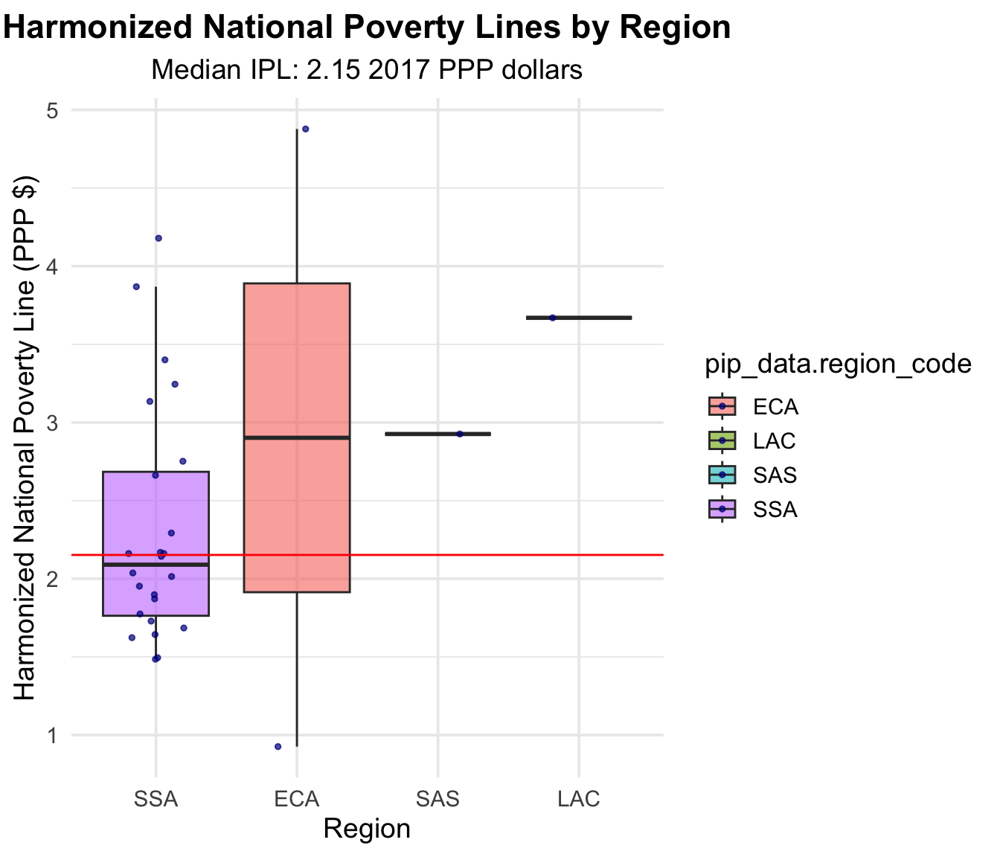
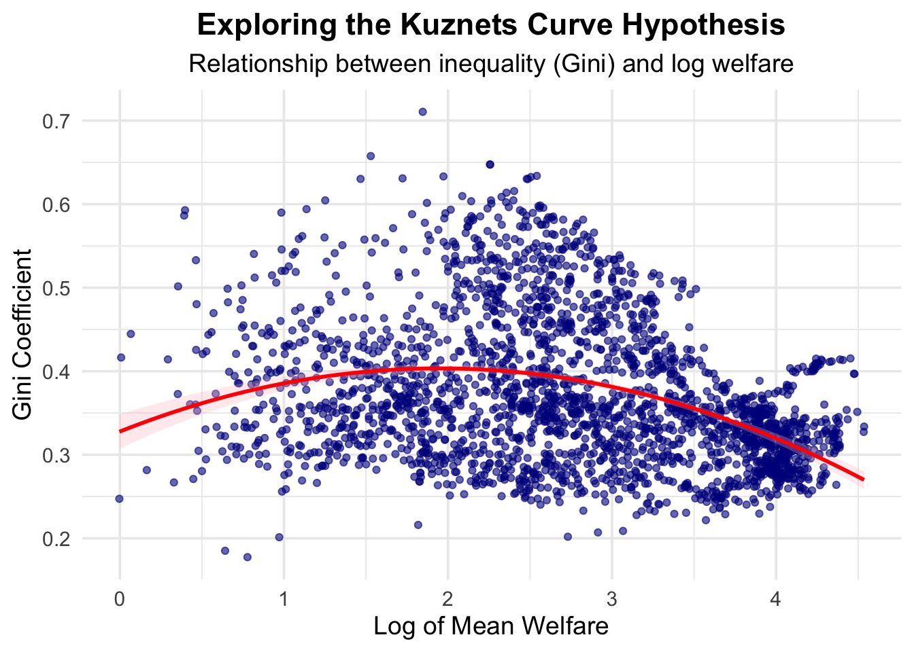
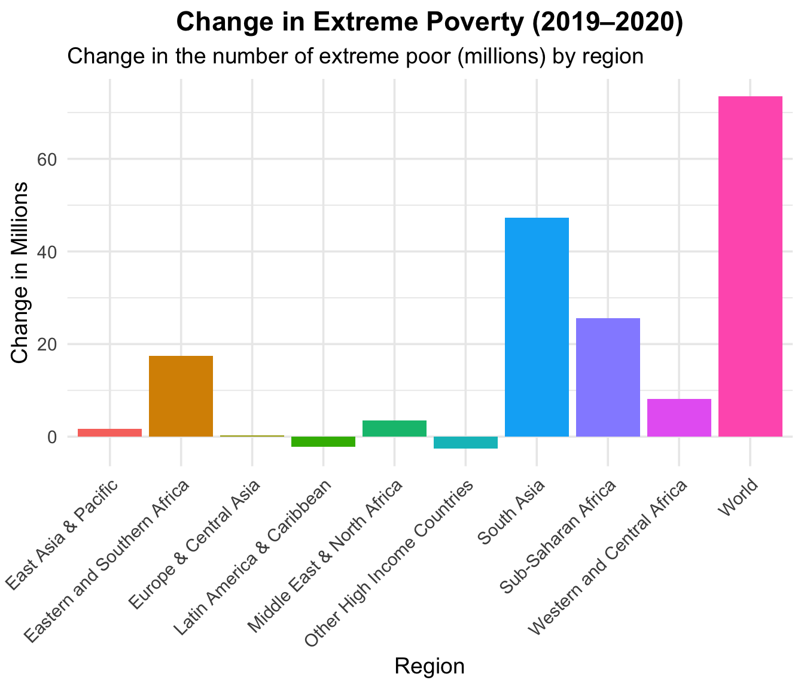
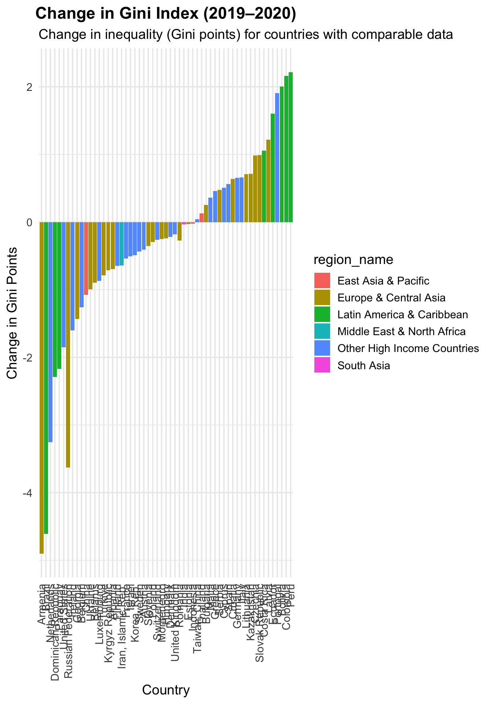

library(pipr)
library(tidyverse)
# library(joyn) # not necessary, but nice features, and developed by our own team!Accessing poverty and inequality data from the World Bank in R
Part 2
Set-up
1 Introduction
The objectives of this session are to:
- Learn how PIP data are actually calculated by replicating them (Nigeria).
- Replication of survey years using percentiles and microdata.
- Replication of reference years (interpolation).
- Calculate the international poverty line.
- Explore the data through some visualizations.
- Kuznets curve.
- COVID-19 impacts.
2 Replicate PIP Data for Nigeria (Survey Years)
First we load the target values:
nga_hc <- get_stats(country = "NGA") |>
select(country_code, year, headcount) |>
rename(hc_pip = headcount)Pruning cachenga_hc |>
str()tibble [8 × 3] (S3: tbl_df/tbl/data.frame)
$ country_code: chr [1:8] "NGA" "NGA" "NGA" "NGA" ...
$ year : num [1:8] 1985 1992 1996 2003 2010 ...
$ hc_pip : num [1:8] 0.478 0.524 0.584 0.479 0.349 ...2.1 Version 1: Using percentiles
Microdata are not available for the public to download. They are only available for you to browse: Microdata browsing.
Instead, we provide access to country-level percentile data for the survey years.
How to access percentile data for the survey years:
Go to https://pip.worldbank.org/home
Go to Further Indicators & Data
Go to Percentiles (Datacatalog Percentiles)
Download percentile data expressed in 2017 PPP dollars for the survey years.
world_100bin <- read_csv("/Users/giorgia/repos/pip_canazei_notes/material/world_100bin.csv")Rows: 245592 Columns: 10
── Column specification ────────────────────────────────────────────────────────
Delimiter: ","
chr (3): country_code, reporting_level, welfare_type
dbl (7): year, percentile, avg_welfare, pop_share, welfare_share, quantile, pop
ℹ Use `spec()` to retrieve the full column specification for this data.
ℹ Specify the column types or set `show_col_types = FALSE` to quiet this message.nga_100bin <- world_100bin |>
filter(country_code == "NGA") |>
select(country_code, year, percentile, avg_welfare, pop_share) |>
arrange(year, percentile) |> # just to make sure
mutate(poor = avg_welfare < 2.15) |> # Deault poverty line is always 2.15
group_by(country_code, year) |>
summarize(hc_own = weighted.mean(poor, w = pop_share, na.rm = TRUE))`summarise()` has grouped output by 'country_code'. You can override using the
`.groups` argument.nga_100bin |>
dplyr::left_join(nga_hc, by = c("country_code", "year"))|>
mutate(d_hc = round(hc_pip/hc_own))# A tibble: 8 × 5
# Groups: country_code [1]
country_code year hc_own hc_pip d_hc
<chr> <dbl> <dbl> <dbl> <dbl>
1 NGA 1985 0.480 0.478 1
2 NGA 1992 0.520 0.524 1
3 NGA 1996 0.580 0.584 1
4 NGA 2003 0.480 0.479 1
5 NGA 2010 0.350 0.349 1
6 NGA 2012 0.340 0.338 1
7 NGA 2015 0.320 0.323 1
8 NGA 2018 0.310 0.309 12.2 Version 2: using actual microdata
First, we need to get auxiliary data:
# CPI
cpi_tables <- get_aux("cpi") |>
rename(cpi = value) |>
select(country_code, year, cpi) |>
filter(country_code == "NGA", year == 2018)
# PPP data
ppp_tables <- get_aux("ppp") |>
rename(ppp = value) |>
select(country_code, year, ppp) |>
filter(country_code == "NGA", year == 2017)Then, we load the microdata:
library(haven)
nga2018 <- read_dta("/Users/giorgia/repos/pip_canazei_notes/material/NGA2018.dta")
nga2018 |>
head(n=5)# A tibble: 5 × 13
year hhid welfare weight urban hsize country_code surveyid rep_year
<dbl> <dbl> <dbl> <dbl> <dbl+lbl> <dbl> <chr> <chr> <dbl>
1 2018 101001 257791. 1799. 1 [Urban] 6 NGA NGA_2018_LSS 2018
2 2018 101001 257791. 1799. 1 [Urban] 6 NGA NGA_2018_LSS 2018
3 2018 101001 257791. 1799. 1 [Urban] 6 NGA NGA_2018_LSS 2018
4 2018 101001 257791. 1799. 1 [Urban] 6 NGA NGA_2018_LSS 2018
5 2018 101001 257791. 1799. 1 [Urban] 6 NGA NGA_2018_LSS 2018
# ℹ 4 more variables: ref_year <dbl>, svyyear <dbl>, reporting_level <chr>,
# welfare_type <chr>Merge with cpi_tables and ppp_tables:
nga2018 <- nga2018 |>
dplyr::left_join(cpi_tables, by = c("country_code")) |>
dplyr::left_join(ppp_tables, by = c("country_code"))nga2018_hc_own <- nga2018 |>
select(country_code, welfare, cpi, ppp, weight, year) |>
mutate(welf_ppp = welfare * (1/cpi) * (1/ppp) * (1/365)) |> # daily p.c. PPP terms
mutate(poor = welf_ppp <= 2.15) |>
group_by(country_code, year) |>
summarize(hc_own = weighted.mean(poor, w = weight))`summarise()` has grouped output by 'country_code'. You can override using the
`.groups` argument.nga2018_hc_own# A tibble: 1 × 3
# Groups: country_code [1]
country_code year hc_own
<chr> <fct> <dbl>
1 NGA 2017 0.3093 Replicate PIP Data for Nigeria (Reference Years)
In part 1 we looked at the difference between survey year estimates and reference year estimates, as well as the difference between fill_gaps = TRUE and nowcast = TRUE. Now, we are going to go through a replication of PIP data for reference years for Nigeria.
To do so, we need to:
Get survey years estimates.
Calculate welfare means for reference years.
Calculate poverty headcount estimates based on welfare means for reference years.
3.1 Get survey years estimates
Survey estimates are accessed as usual with get_stats():
nga_pip <- get_stats(country = "NGA", # note that we are not filling gaps
reporting_level = "national") |>
select(country_code, wt = welfare_time, mean)
head(nga_pip)# A tibble: 6 × 3
country_code wt mean
<chr> <dbl> <dbl>
1 NGA 1985. 2.90
2 NGA 1992 2.86
3 NGA 1996. 2.92
4 NGA 2004. 2.92
5 NGA 2010. 3.50
6 NGA 2012. 3.55Note that welfare time is expressed in a decimal form, e.g. 2015.5 for a survey conducted in the middle of 2015.
3.2 Get interpolated means
Welfare means are already calculated for us following the methodology described in the PIP methodology handbook. We can access them using the function get_aux("interpolated_means"):
means_table <- get_aux("interpolated_means") |>
select(country_code, year, welfare_time, welfare_type, survey_time, predicted_mean_ppp) |>
filter(country_code == "NGA")
str(means_table)tibble [76 × 6] (S3: tbl_df/tbl/data.frame)
$ country_code : chr [1:76] "NGA" "NGA" "NGA" "NGA" ...
$ year : num [1:76] 1981 1982 1983 1984 1985 ...
$ welfare_time : num [1:76] 1985 1985 1985 1985 1985 ...
$ welfare_type : chr [1:76] "consumption" "consumption" "consumption" "consumption" ...
$ survey_time : chr [1:76] "1985-1986" "1985-1986" "1985-1986" "1985-1986" ...
$ predicted_mean_ppp: num [1:76] 3.45 3.22 2.92 2.85 2.91 ...3.3 Calculate interpolated values
Next, we need to calculate interpolated values.
# First we merge the interpolated means with survey estimates
merged_data <- means_table |>
dplyr::left_join(nga_pip, by = c("country_code", "welfare_time" = "wt"))
merged_data |> head(n=5)# A tibble: 5 × 7
country_code year welfare_time welfare_type survey_time predicted_mean_ppp
<chr> <dbl> <dbl> <chr> <chr> <dbl>
1 NGA 1981 1985. consumption 1985-1986 3.45
2 NGA 1982 1985. consumption 1985-1986 3.22
3 NGA 1983 1985. consumption 1985-1986 2.92
4 NGA 1984 1985. consumption 1985-1986 2.85
5 NGA 1985 1985. consumption 1985-1986 2.91
# ℹ 1 more variable: mean <dbl>Then, we need to:
- Scale the adjusted poverty line, using the ratio between the survey
meanand thepredicted_mean_ppp(instead of adjusting the whole distribution). - Calculate interpolation weights based on the distance between the
welfare_timeand the referenceyear. - Normalize the interpolation weights (calculate
interpolation_shr.
merged_data_step1 <- merged_data |>
mutate(pl_to_query = 2.15 * mean / predicted_mean_ppp) |>
filter(!is.na(pl_to_query))
head(merged_data)# A tibble: 6 × 7
country_code year welfare_time welfare_type survey_time predicted_mean_ppp
<chr> <dbl> <dbl> <chr> <chr> <dbl>
1 NGA 1981 1985. consumption 1985-1986 3.45
2 NGA 1982 1985. consumption 1985-1986 3.22
3 NGA 1983 1985. consumption 1985-1986 2.92
4 NGA 1984 1985. consumption 1985-1986 2.85
5 NGA 1985 1985. consumption 1985-1986 2.91
6 NGA 1986 1985. consumption 1985-1986 2.86
# ℹ 1 more variable: mean <dbl>merged_data_step2 <- merged_data_step1 |>
group_by(year) |>
mutate(
interpol_wt = 1 / abs(welfare_time - year), # Raw weights based on distance
interpol_wtt = sum(interpol_wt, na.rm = TRUE), # Total weights within group
interpol_shr = interpol_wt / interpol_wtt, # Normalized weights
survey_year = floor(welfare_time) # Survey year as integer
) |>
ungroup() |> # Ungroup for further processing
arrange(country_code, year, welfare_time)
head(merged_data_step2)# A tibble: 6 × 12
country_code year welfare_time welfare_type survey_time predicted_mean_ppp
<chr> <dbl> <dbl> <chr> <chr> <dbl>
1 NGA 1981 1985. consumption 1985-1986 3.45
2 NGA 1982 1985. consumption 1985-1986 3.22
3 NGA 1983 1985. consumption 1985-1986 2.92
4 NGA 1984 1985. consumption 1985-1986 2.85
5 NGA 1985 1985. consumption 1985-1986 2.91
6 NGA 1986 1985. consumption 1985-1986 2.86
# ℹ 6 more variables: mean <dbl>, pl_to_query <dbl>, interpol_wt <dbl>,
# interpol_wtt <dbl>, interpol_shr <dbl>, survey_year <dbl>Finally we are ready for the poverty headcount estimation, which we’ll do in two steps:
First, we use get_stats() to calculate the new poverty headcount at each scaled poverty line (pl_to_query), and at each survey_year. For this exercise you can loop through the values, use rowwise() operations, or use purrr like we did here:
merged_data_step3 <- merged_data_step2 |>
filter(year %in% 2015:2020)
pl_queries <- merged_data_step3 |>
mutate(
hc = purrr::map2_dbl(
.x = survey_year,
.y = pl_to_query,
~ get_stats(
country = "NGA",
reporting_level = "national",
year = .x,
povline = .y
)$headcount[1]
)
)pl_queries |> select(year, welfare_time, survey_year, pl_to_query, hc) |> str()tibble [10 × 5] (S3: tbl_df/tbl/data.frame)
$ year : num [1:10] 2015 2015 2016 2016 2017 ...
$ welfare_time: num [1:10] 2012 2016 2016 2019 2016 ...
$ survey_year : num [1:10] 2012 2015 2015 2018 2015 ...
$ pl_to_query : num [1:10] 2.07 2.12 2.16 2.14 2.16 ...
$ hc : num [1:10] 0.316 0.315 0.324 0.308 0.325 ...Then, we calculate the weighted average of those headcounts estimates hc based on the share of the time (interpolated_shr)
nga_final_estimates <- pl_queries |>
group_by(year) |>
summarize(hc = weighted.mean(hc, interpol_shr, na.rm = TRUE)) |>
ungroup()
str(nga_final_estimates)tibble [6 × 2] (S3: tbl_df/tbl/data.frame)
$ year: num [1:6] 2015 2016 2017 2018 2019 ...
$ hc : num [1:6] 0.315 0.322 0.317 0.312 0.309 ...And we check the results:
nga_pip_fillgaps <- get_stats(country = "NGA", # note that we are not filling gaps
reporting_level = "national") |>
select(country_code, year, hc_target = headcount) # year is = reference year!
nga_final_estimates |>
dplyr::left_join(nga_pip_fillgaps, by=c('year'))|>
mutate(d_hc = hc_target/hc)|>
summary() year hc country_code hc_target
Min. :2015 Min. :0.3091 Length:6 Min. :0.3086
1st Qu.:2016 1st Qu.:0.3130 Class :character 1st Qu.:0.3121
Median :2018 Median :0.3162 Mode :character Median :0.3156
Mean :2018 Mean :0.3168 Mean :0.3156
3rd Qu.:2019 3rd Qu.:0.3206 3rd Qu.:0.3191
Max. :2020 Max. :0.3254 Max. :0.3226
NA's :4
d_hc
Min. :0.9881
1st Qu.:0.9971
Median :1.0062
Mean :1.0062
3rd Qu.:1.0152
Max. :1.0242
NA's :4 4 Estimate Global and Regional Poverty
In Part 1, we looked at the function get_wb(), which gives you access to regional and global estimates of poverty and inequality metrics.
In this session, we will look at how exactly those numbers are calculated using country-level data and auxiliary tables (accessed with get_aux()).
Before starting, let’s have another look at the regional estimates available in PIP, and for which regions we need to calculate it:
However, there is not a one-to-one correspondence between the regions in the regional estimates and the regions in the country-level data:
pip_regional <- get_wb()
pip_regional |>
distinct(region_code, region_name)# A tibble: 10 × 2
region_code region_name
<chr> <chr>
1 AFE Eastern and Southern Africa
2 AFW Western and Central Africa
3 EAP East Asia & Pacific
4 ECA Europe & Central Asia
5 LAC Latin America & Caribbean
6 MNA Middle East & North Africa
7 OHI Other High Income Countries
8 SAS South Asia
9 SSA Sub-Saharan Africa
10 WLD World country_estimates <- get_stats(fill_gaps = TRUE)
country_estimates |>
distinct(region_code, region_name)# A tibble: 7 × 2
region_code region_name
<chr> <chr>
1 SSA Sub-Saharan Africa
2 ECA Europe & Central Asia
3 OHI Other High Income Countries
4 LAC Latin America & Caribbean
5 SAS South Asia
6 EAP East Asia & Pacific
7 MNA Middle East & North Africa We will need to calculate regional estimates for Eastern and Southern Africa (AFE) and Western and Central Africa (AFW) separately.
4.1 Get Population Data and Country Reference Table
You can use the function get_aux() to access population data for each country in PIP. We only need national level estimates, so we filter the data accordingly (and we keep Argentina, which is calculated based on urban population).
pop_tables <-
get_aux("pop") |>
filter(data_level == "national" | country_code == "ARG") |>
rename(pop = value, reporting_level = data_level) |>
filter(year %in% c(1990:2022)) |>
mutate(year = as.numeric(as.character(year)))
pop_tables# A tibble: 7,260 × 4
country_code reporting_level year pop
<chr> <chr> <dbl> <dbl>
1 ABW national 1990 65712
2 ABW national 1991 67864
3 ABW national 1992 70192
4 ABW national 1993 72360
5 ABW national 1994 74710
6 ABW national 1995 77050
7 ABW national 1996 79417
8 ABW national 1997 81858
9 ABW national 1998 84355
10 ABW national 1999 86867
# ℹ 7,250 more rowsData are now identified uniquely by country_code, year, and data_level.
We get additional country-level reference table to match country codes with regions.
country_tables <- get_aux("country_list") |>
select(region_code, region, country_code, country_name,
africa_split, africa_split_code) |>
rename(region_name = region)
country_tables |>
filter(region_code == "SSA")# A tibble: 48 × 6
region_code region_name country_code country_name africa_split
<chr> <chr> <chr> <chr> <chr>
1 SSA Sub-Saharan Africa AGO Angola Eastern and…
2 SSA Sub-Saharan Africa BDI Burundi Eastern and…
3 SSA Sub-Saharan Africa BEN Benin Western and…
4 SSA Sub-Saharan Africa BFA Burkina Faso Western and…
5 SSA Sub-Saharan Africa BWA Botswana Eastern and…
6 SSA Sub-Saharan Africa CAF Central African Rep… Western and…
7 SSA Sub-Saharan Africa CIV Cote d'Ivoire Western and…
8 SSA Sub-Saharan Africa CMR Cameroon Western and…
9 SSA Sub-Saharan Africa COD Congo, Dem. Rep. Eastern and…
10 SSA Sub-Saharan Africa COG Congo, Rep. Western and…
# ℹ 38 more rows
# ℹ 1 more variable: africa_split_code <chr>4.2 Obtain reference-year poverty estimates and Merge
We then get country-level estimates at the national level for the poverty headcount ratio:
country_estimates <- country_estimates |>
select(country_code, year, reporting_level, headcount) |>
filter(reporting_level == "national" | country_code == "ARG") |>
filter(year %in% c(1990:2022)) |>
rename(hc = headcount)And check that they are uniquely identified:
library(joyn)
Attaching package: 'joyn'The following objects are masked from 'package:dplyr':
anti_join, full_join, inner_join, left_join, right_joinThe following object is masked from 'package:base':
mergejoyn::is_id(country_estimates, c('country_code', 'year'))── Duplicates in terms of `country_code` and `year` copies n percent
1 1 5550 100%
2 total 5550 100%─────────────────────────────────────────────────────── End of is_id() report ──[1] TRUEWe then merge them to population and country reference tables:
country_estimates <- country_estimates |>
dplyr::left_join(pop_tables, by = c("country_code", "year", "reporting_level")) |>
dplyr::left_join(country_tables, by = "country_code") |>
arrange(country_code, year, reporting_level)4.3 Get Africa Split Codes for AFW and AFE and Append
We want to calculate regional estimates for Eastern and Southern Africa (AFE) and Western and Central Africa (AFW) separately. To do so, we can use the africa_split_code variable:
subreg <- country_estimates |>
filter(africa_split_code %in% c("AFW", "AFE")) |>
mutate(region_code = africa_split_code, # Here we substitute the region_code with the respective africa_split_code.
subregion = 1,
region_name = africa_split_code)
subreg |> head(n=5)# A tibble: 5 × 11
country_code year reporting_level hc pop region_code region_name
<chr> <dbl> <chr> <dbl> <dbl> <chr> <chr>
1 AGO 1990 national 0.179 11828638 AFE AFE
2 AGO 1991 national 0.184 12228691 AFE AFE
3 AGO 1992 national 0.202 12632507 AFE AFE
4 AGO 1993 national 0.254 13038270 AFE AFE
5 AGO 1994 national 0.256 13462031 AFE AFE
# ℹ 4 more variables: country_name <chr>, africa_split <chr>,
# africa_split_code <chr>, subregion <dbl>country_estimates_complete <- country_estimates |>
bind_rows(subreg)
# Note correspondeces now:
country_estimates_complete |>
select(region_code, africa_split, africa_split_code) |>
distinct()# A tibble: 10 × 3
region_code africa_split africa_split_code
<chr> <chr> <chr>
1 SSA Eastern and Southern Africa AFE
2 ECA <NA> <NA>
3 OHI <NA> <NA>
4 LAC <NA> <NA>
5 SSA Western and Central Africa AFW
6 SAS <NA> <NA>
7 EAP <NA> <NA>
8 MNA <NA> <NA>
9 AFE Eastern and Southern Africa AFE
10 AFW Western and Central Africa AFW 4.4 Calculate Global Poverty Estimates
global_poverty <- country_estimates_complete %>%
filter(subregion != 1) %>% # Removes duplicates of African countries used for subr-egional estimates
group_by(year) %>%
summarize(hc = weighted.mean(hc, pop, na.rm = TRUE),
pop = sum(pop, na.rm = TRUE),
region_code = "WLD",
region_name = "World")regional_poverty <- country_estimates_complete %>%
group_by(region_code, region_name, year) %>%
summarize(hc = weighted.mean(hc, pop, na.rm = TRUE),
pop = sum(pop, na.rm = TRUE))`summarise()` has grouped output by 'region_code', 'region_name'. You can
override using the `.groups` argument.regional_estimates <- bind_rows(regional_poverty, global_poverty) |> rename(hc_own = hc)4.5 Compare with already calculated regioal aggregates
regional_comparison <- pip_regional |>
select(region_code, year, hc = headcount) |>
filter(year >= 1990) |>
full_join(regional_estimates, by = c("region_code", "year"))|>
mutate(d_hc = hc/hc_own)── JOYn Report ── .joyn n percent
1 x 53 15.1%
2 x & y 297 84.9%
3 total 350 100%────────────────────────────────────────────────────────── End of JOYn report ──ℹ Note: Joyn's report available in variable .joynℹ Note: Removing key variables region_code and year from region_code,
region_name, year, hc_own, and popmean_d_hc <- mean(regional_comparison$d_hc, na.rm = TRUE)
if (round(mean_d_hc) != 1) {
warning("The mean of d_hc is not approximately 1. Check the merge.")
} # We're okay!5 Calculate the international poverty line
The IPL is now derived as the median of the national poverty lines of 28 of the world’s poorest countries, expressed in 2017 PPPs. For convenience, we will make use of an already generated dataset containing headcount ratios for this set of countries. More on the international poverty line (theory and Q&A): Factseet on Adjustment to the Poverty Line.
5.1 Load Data and query PIP
First we load the headcount ratios for the 28 countries:
npl_data <- read_stata("/Users/giorgia/repos/pip_canazei_notes/material/national_poverty_rates_lic.dta")Next we query PIP to derive the poverty line at a given headcount. To do so, we need to use the argument popshare, and loop through (or use {purrr} for vectorized loops) each country and headcount ratio:
harmonized_npl <- npl_data |>
mutate(
pip_data = map2(
.x = country_code,
.y = headcount_nat,
.f = ~ get_stats(
country = .x,
year = "all",
popshare = .y
))
)harmonized_npl_unnested <- harmonized_npl |>
select(country_code, year, pip_data) |>
# Unnest the fetched data
unnest(pip_data, names_sep = ".")
harmonized_npl_unnested |> head(n=5)# A tibble: 5 × 46
country_code year pip_data.region_name pip_data.region_code
<chr> <dbl> <chr> <chr>
1 AZE 2001 Europe & Central Asia ECA
2 AZE 2001 Europe & Central Asia ECA
3 AZE 2001 Europe & Central Asia ECA
4 AZE 2001 Europe & Central Asia ECA
5 AZE 2001 Europe & Central Asia ECA
# ℹ 42 more variables: pip_data.country_name <chr>,
# pip_data.country_code <chr>, pip_data.year <dbl>,
# pip_data.reporting_level <chr>, pip_data.survey_acronym <chr>,
# pip_data.survey_coverage <chr>, pip_data.welfare_time <dbl>,
# pip_data.welfare_type <chr>, pip_data.survey_comparability <dbl>,
# pip_data.comparable_spell <chr>, pip_data.poverty_line <dbl>,
# pip_data.headcount <dbl>, pip_data.poverty_gap <dbl>, …harmonized_npl_unnested <-
harmonized_npl_unnested |>
# Filter and prepare final dataset
filter(pip_data.year == year,
pip_data.welfare_type == "consumption") |>
select(
country_code, pip_data.region_code, pip_data.year, pip_data.welfare_time, pip_data.headcount,
pip_data.poverty_line, pip_data.reporting_level, pip_data.welfare_type
) |>
rename(harm_npl = pip_data.poverty_line) |>
mutate(harm_npl = as.numeric(harm_npl))
harmonized_npl_unnested# A tibble: 28 × 8
country_code pip_data.region_code pip_data.year pip_data.welfare_time
<chr> <chr> <dbl> <dbl>
1 AZE ECA 2001 2001
2 BDI SSA 2013 2014.
3 BEN SSA 2015 2015
4 BFA SSA 2014 2014
5 CAF SSA 2008 2008
6 COD SSA 2012 2012.
7 COM SSA 2004 2004
8 ETH SSA 2015 2016.
9 GIN SSA 2012 2012
10 GMB SSA 2015 2015.
# ℹ 18 more rows
# ℹ 4 more variables: pip_data.headcount <dbl>, harm_npl <dbl>,
# pip_data.reporting_level <chr>, pip_data.welfare_type <chr>5.2 Calculate the International Poverty Line (IPL)
ipl <- harmonized_npl_unnested |>
summarize(ipl = median(harm_npl, na.rm = TRUE)) |>
pull(ipl)5.3 Visualize Harmonized Poverty Lines by Region
ggplot(harmonized_npl_unnested,
aes(x = reorder(pip_data.region_code, harm_npl), y = harm_npl, fill = pip_data.region_code)) +
geom_boxplot(outlier.shape = NA, alpha = 0.6) +
geom_jitter(color = "darkblue", size = 1, width = 0.2, alpha = 0.7) +
geom_hline(aes(yintercept = ipl), colour = "red") +
labs(
title = "Harmonized National Poverty Lines by Region",
subtitle = paste("Median IPL:", round(ipl, 2), "2017 PPP dollars"),
x = "Region",
y = "Harmonized National Poverty Line (PPP $)"
) +
theme_minimal(base_size = 14) +
theme(
plot.title = element_text(face = "bold", hjust = 0.5),
plot.subtitle = element_text(hjust = 0.5)
)
6 Exercise 1: Kuznets Curve
We can now move on to more interactive exercises which use PIP data. First, we are going to explore the Kuznets curve hypothesis. The Kuznets curve hypothesis posits that inequality first increases and then decreases as a country develops. The hypothesis is often represented by an inverted U-shaped curve.
To do so, we(you) need to:
Plot the relationship between an inequality metric and log mean welfare.
Test the relationship by regressing an inequality metric on a 2nd order polynomial of log mean welfare.
6.1 Scatterplot
Unfold the code to reveal the answer:
Code
# Load PIP data
pip_data <- get_stats()
# filter(welfare_type == "consumption", reporting_level == "national") Does it hold for different types of data?
# Plot
scatterplot <- ggplot(pip_data, aes(x = log(mean), y = gini)) +
geom_point(color = "darkblue", alpha = 0.6) +
geom_smooth(method = "lm", formula = y ~ poly(x, 2), se = TRUE, color = "red", fill = "pink", alpha = 0.3) +
labs(
title = "Exploring the Kuznets Curve Hypothesis",
subtitle = "Relationship between inequality (Gini) and log welfare",
x = "Log of Mean Welfare",
y = "Gini Coefficient"
) +
theme_minimal(base_size = 14) +
theme(
plot.title = element_text(face = "bold", hjust = 0.5),
plot.subtitle = element_text(hjust = 0.5)
)
scatterplot
6.2 Regression Check
Unfold the code to see the answer:
Code
# Regression check
model <- lm(gini ~ log(mean)^2 + I(log(mean)^2), data = pip_data)
summary(model)
Call:
lm(formula = gini ~ log(mean)^2 + I(log(mean)^2), data = pip_data)
Residuals:
Min 1Q Median 3Q Max
-0.198689 -0.053741 -0.009753 0.045945 0.307319
Coefficients:
Estimate Std. Error t value Pr(>|t|)
(Intercept) 0.327814 0.010476 31.293 <2e-16 ***
log(mean) 0.077606 0.008401 9.238 <2e-16 ***
I(log(mean)^2) -0.019922 0.001575 -12.651 <2e-16 ***
---
Signif. codes: 0 '***' 0.001 '**' 0.01 '*' 0.05 '.' 0.1 ' ' 1
Residual standard error: 0.08024 on 2453 degrees of freedom
Multiple R-squared: 0.1431, Adjusted R-squared: 0.1424
F-statistic: 204.9 on 2 and 2453 DF, p-value: < 2.2e-166.3 Conclusion
- Scatterplot:
- Plots the Gini coefficient (inequality) against the log of mean welfare.
- Includes a trendline modeled using a quadratic regression to check for the inverted U-shape.
- Regression Analysis:
- Regresses Gini on a 2nd-order polynomial of log(mean): $\(Gini = \beta_0 + \beta_1 \cdot \log(mean) + \beta_2 \cdot \log(mean)^2 + \epsilon\)$
- The summary output will show:
- Whether the quadratic term (\(\beta_2\)) is significant.
- If (\(\beta_2 < 0\)), it supports the Kuznets hypothesis (inverted U-shape).
- However: when filtering to consumption/income data only, things are more complex.
Code
scatterplot + facet_wrap(~welfare_type)
7 Exercise 2: COVID-19 Impact on poverty and inequality
For this exercise you will need to:
Calculate and plot the change in millions of extreme poor by region from 2019 to 2020.
Calculate and plot the changes in Gini observed from 2019 to 2020 for countries with comparable data during these two years.
7.1 Change in Millions of Extreme Poor
First, load, the data at the regional level (get_wb()) and generate the metric needed (change in poverty, in millions). Unfold the code to see the answer:
Next, plot the data. Again, unfold the code to see the answer:
Code
# Plot change in number of poor (in millions) by region
poverty_plot <- ggplot(wb_data, aes(x = region_name, y = changeinpoor / 10^6, fill = region_name)) +
geom_bar(stat = "identity") +
labs(
title = "Change in Extreme Poverty (2019–2020)",
subtitle = "Change in the number of extreme poor (millions) by region",
x = "Region",
y = "Change in Millions"
) +
theme_minimal(base_size = 14) +
theme(
plot.title = element_text(face = "bold", hjust = 0.5),
axis.text.x = element_text(angle = 45, hjust = 1),
legend.position = "none"
)
poverty_plot
7.2 Change in Gini Coefficient
First, download the data at the country level get_stats() and generate the needed metrics (change in Gini). Unfold the code to see the answer:
Code
# Load data for Gini index
df_gini <- get_stats() |>
filter((year == 2019 | year == 2020) & reporting_level == "national") |> # Select years and national data
group_by(country_code, welfare_type, comparable_spell) |> # Group by country and welfare type
filter(n() == 2) |> # Keep only countries with data in both years
arrange(country_code, year) |> # Ensure sorted order
mutate(ginichange = gini - lag(gini)) |> # Calculate change in Gini
filter(year == 2020) # Keep only 2020 data for plottingNext, plot the data. Unfold the code to see the answer:
Code
# Plot change in Gini index by country
gini_plot <- ggplot(df_gini, aes(x = reorder(country_name, + ginichange), y = ginichange * 100, fill = region_name)) +
geom_bar(stat = "identity") +
labs(
title = "Change in Gini Index (2019–2020)",
subtitle = "Change in inequality (Gini points) for countries with comparable data",
x = "Country",
y = "Change in Gini Points"
) +
theme_minimal(base_size = 14) +
theme(
plot.title = element_text(face = "bold", hjust = 0.5),
axis.text.x = element_text(angle = 90, vjust = 0.5, hjust = 1)
)
gini_plot